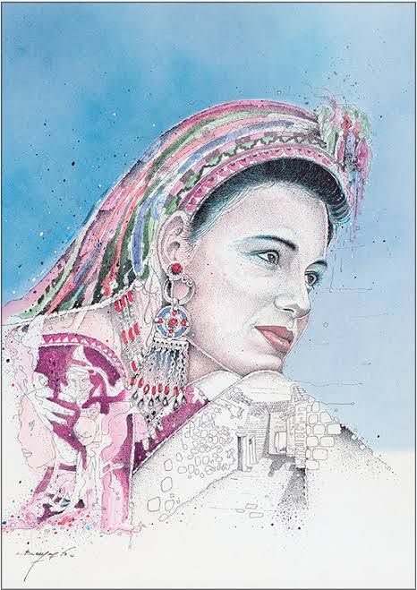

La gardienne des racines
Sous le soleil qui fend la terre,
Elle marche,
droite,
sans détour,
Ses mains portent la mémoire,
Ses yeux,
la lumière des jours anciens.
Dans le souffle des montagnes du Djurdjura,
Elle tisse les fils de la parole,
Brode les signes sur la laine,
Comme on écrit l’histoire en silence.
Ses gestes parlent plus fort que les livres :
Un chant,
une recette,
un conte au coin du feu,
Et voilà qu’un monde renaît,
Amazigh et éternel.
Elle transmet sans discours,
Par le regard,
par l’exemple,
Par le rythme du travail,
Et la fierté sans éclat.
Sous ses pas,
la terre apprend à se souvenir,
Dans son cœur,
les mots anciens se font prière,
Et chaque graine qu’elle sème
Porte un peu de notre mémoire.
Femme des plaines,
des montagnes,
des villages,
Tu es le fil qui relie le passé au lendemain,
Toi,
la gardienne invisible du patrimoine,
Tu fais battre l’âme amazighe au cœur du temps.
Djamel Metref
At Yenni le 5 octobre 2025
Portraits © Farid Benyaa

← Tous les poèmes